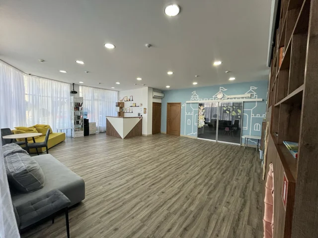
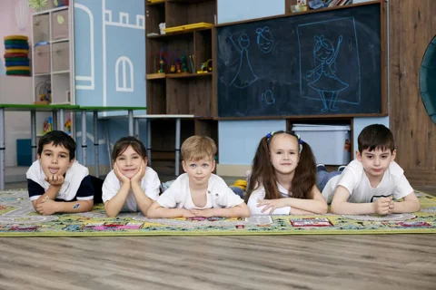

Франшиза для вас, если:
- Мечтаете открыть детский сад, но боитесь бюрократии и ответственности
- Уже работаете с детьми, но хотите выстроить понятную и стабильную систему
- Инвестируете в устойчивый и социально значимый бизнес
- Устали от наёмной работы — хотите дело, которое приносит радость и доход
- У вас есть детский центр, и вы хотите масштабироваться в полноценный сад
- Готовый бренд и инструменты продвижения
Название, логотип и фирменное оформление сада, шаблоны рекламных и клиентских материалов. У команды есть единая основа для вывески, презентаций и общения с родителями — её не нужно создавать с нуля у разных подрядчиков.

- Документы и рабочие журналы
Документы по кадрам, работе с клиентами, питанию и охране труда, для оформления налогового вычета и оплаты маткапиталом. Журналы учёта питания, заболеваний и работы оборудования — собранная база для запуска и успешной ежедневной работы сада.
- Финансовая модель и точка безубыточности
Точка безубыточности, план доходов и расходов, сценарии загрузки и роста. Показываем, как аренда, фонд оплаты труда, питание и средний чек влияют на результат — чтобы оценить экономику до подписания аренды и вложений в ремонт.

- Обучение команды
Администраторов обучаем продажам по проверенным скриптам: звонки, экскурсия, работа с возражениями. Воспитателей — работе с детьми и родителями. Руководителя — постановке задач и контролю работы. Команда получает конкретный порядок действий.

- Смета и проверенные поставщики
Смета оснащения и проверенные поставщики мебели, игрушек и пособий. Помогаем определить, что купить для старта, в каком количестве и что можно отложить — чтобы не закупать лишнее и не собирать весь комплект наугад.

- Помощь с лицензией и договорами
Помогаем с выбором помещения, подходящего под нормы СанПиН. Помогаем подготовить документы для получения лицензии и договоры для работы сада. Объясняем, какие документы нужны и в каком порядке их готовить.
- Лидогенерация — заявки от родителей
Настраиваем лидогенерацию для вашего сада. Вы получаете заявки с номерами телефонов родителей, которые интересуются садом. Администратор может связаться с ними и пригласить на экскурсию.

- Помощь методиста
Готовые планы занятий, конспекты и материалы для работы с детьми, а также готовые сценарии мероприятий и утренников.

- Контент-план для соцсетей
Даём контент-план для соцсетей: темы публикаций и график их выхода. Вы знаете, что и когда публиковать, чтобы рассказывать родителям о занятиях, воспитателях и жизни сада и увеличивать продажи.

- Поддержка в рабочих ситуациях
Помогаем применять скрипты и рабочие материалы в вашем саду: отвечать на вопросы родителей, проводить экскурсии, работать с возражениями и распределять задачи сотрудников. У администратора, воспитателя и руководителя есть опора для конкретных действий.

Узнайте больше о франшизе
Оставьте заявку — отправим полную презентацию.